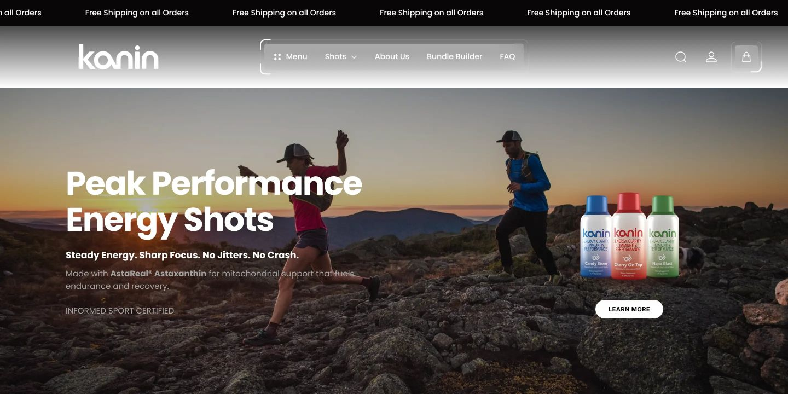
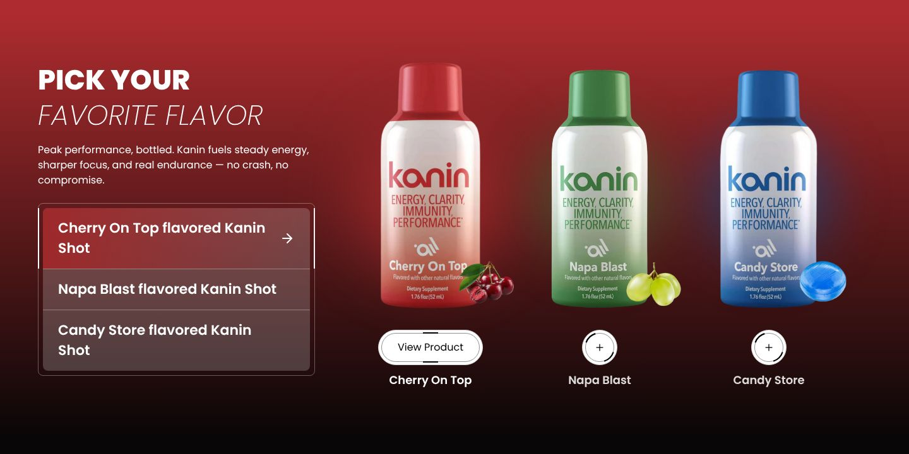
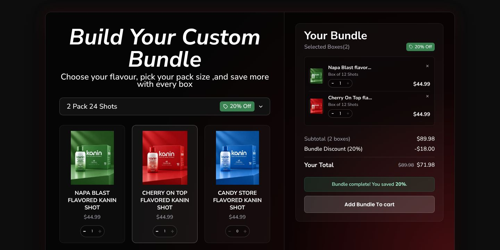

Kanin Homepage Mockups
Working previews of two proposed homepage changes. Everything is clickable; resize the window or open on a phone to see the mobile layouts.

Start here
Both changes, on the homepage
- The live homepage, with both new sections in their real spots.
- Only the new sections are interactive; the rest of the page is a static backdrop.
- Use the “Jump to” bar at the bottom to go straight to each change.

Change 1
Pick Your Favorite Flavor: all three bottles
- All three bottles are on screen at once; no more switching between them.
- Clicking a bottle (or its name in the list) opens that product page.
- Keeps the color-shifting background, floating fruit and “View Product” button.

Change 2
Build Your Custom Bundle on the homepage
- The header-popup bundle builder, placed directly on the homepage.
- Mix flavors freely: e.g. 1 Napa Blast + 1 Cherry On Top, or 2 of one flavor.
- Same pack sizes, discounts, totals and summary as the popup.